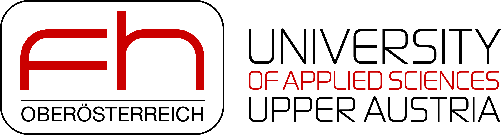

PARTNERS



An open-source based biolab for biomaterials research and development of bio-medical research applications and hardware solutions, with a focus on the development of future-proof 3D biofabrication.
- 3D Biofabrication
- prototyping and open-sourcing biomedical technologies
- method development and validation
We are here to facilitate the work of bio-medical researchers from industry and academia, and act as partners for their specific needs in technology development so they can focus on research.
Driven by excellent R&D of the interdisciplinary team at IRNAS, bio-research know-how and manufacturing capabilities of Fabrikor. Working by open-source and collaborative design principles.
Most of our work is currently focused on the development of an open-source 3D bioprinting platform and specialized scientific and industrial solutions for 3D biofabrication. With this project, we wish to propose an alternative to the currently available bioprinting technologies, which are very generic, closed-source and expensive, yet poorly modifiable and often don't meet the specific needs that most users (currently in research) have.
Find out moreWe've put together a complete collection of affordable and DIY laboratory equipment, which is required for common methodology in a biological research lab. It includes hardware descriptions, use, approximate commercial costs and current DIY status. The repository is available on Github and open to everyone to share and edit.
Find out moreTo simplify the use of DIY lab equipment and make it even more accessible to the bio-research enthusiast without engineering and programming skills, we set out to develop a multi-purpose controller. The goal of this project is creating an arduino-based platform with all the necessary components required in many tools found in a typical bio-research lab (magnetic stirrer, centrifuge, heating plate, etc.), simple instructions and a database of finished software to use and reuse the system for various purposes. The project is currently in the phase of prototyping and case-study testing.
Find out moreMushrooms have received a lot of attention in recent years, not only as produce of urban farms, but also for other purposes such as biodegradable styrofoam alternatives, sources of "vegan leather", etc. We set-up and tested the conditions for aseptic transfection and growth of mycelia and mushrooms, but also investigated the health related effects of medicinal mushrooms as well as the possibilities of their cultivation.
Find out more